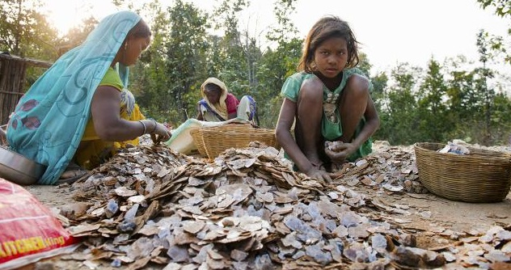

In the hilly forests of rural Jharkand, India, children as young as 10 are hammering flakes of rock off the mountainside. Others, mostly young girls, carry baskets of rocks to the top of the mine to sort through their contents. Their job is to separate glittering fragments from the rock debris. These fragments are mica, the mineral that adds a shimmer to beauty products such as blusher, eye shadow, lipstick and foundation, as well as to the paints used by the car and construction industries. The impact on the health of children working in mica mines is detrimental. But interviews with workers and local communities discovered children were not only risking their health in abandoned “ghost” mines off official radars, but they were dying in the unregulated, crumbling mines, with seven killed since June 2016.

Mica minining in India
Are there any successes?
Cosmetics brands are making efforts to clear their supply chains of mica but have been unsuccessful in completely eliminating it from their products (lush). Some companies such as Estée Lauder, L’Oréal and Yves Rocher, have focused on “child-friendly villages” with a view to get children in 500 villages in the region into school instead of mining by working with local communities and governments to improve educational infrastructure and living conditions.
How you can help?
When buying cosmetics products check if they contain mica and avoid them. Buy a bike to help girls go to school instead of the mine! Read more here.
Watch this video!
The ugly face of beauty